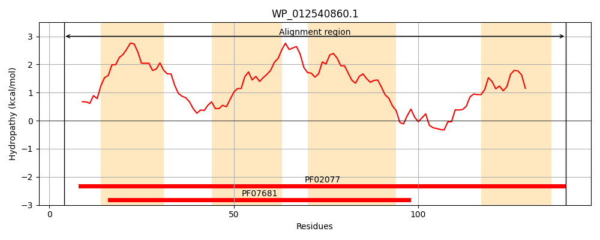
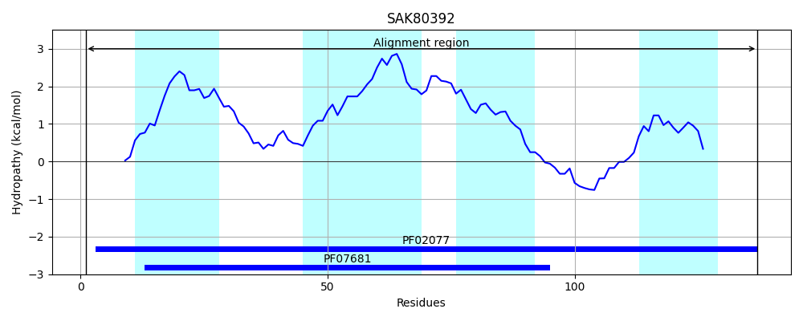
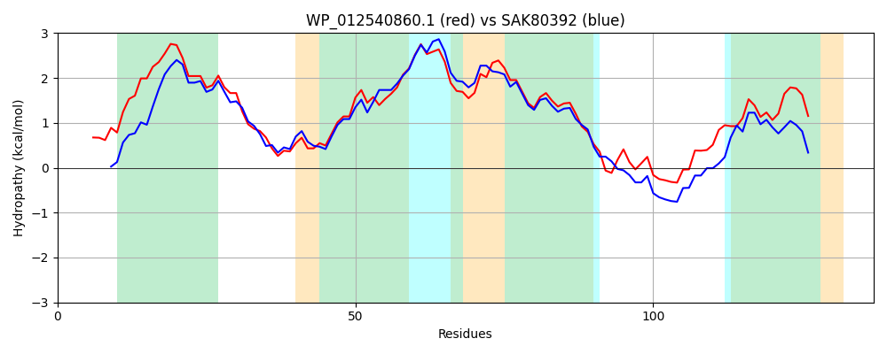

Hit Accession: SAK80392
Hit TCID: 9.B.214.2.2
Hit Description: gnl|BL_ORD_ID|20095 gnl|TC-DB|SAK80392.1|9.B.214.2.2 DoxX family protein [Burkholderia ptereochthonis]
Mach Len: 137
e:0.000000
Query TMS Count : 4
Hit TMS Count: 4
TMS-Overlap Score: 3.450000
Predicted Substrates:None
BLAST Alignment:
Score: 424 , Bit scores: 167 bits, E-value: 9.5e-55, Alignment length: 137, Percentage identity: 58
Query: 4 LRYFDFGASRSLLLLIARIAVVVLFILFGYPKLLGFGGTVQYMAASGAPMPTLAAIIAVIMEVPAAILIVLGFFTRPLAVIFIFYTLGTAVIGHHYWDMTGDAVLPNMINFWKNVSIAGAFLLLAITGPGAISLDRR 140
+RY + LLL+AR+ +++LF+LFG+ KL+GF GTV YM + GAP PT +AIIAV+ME+ I IVLG FTRPLA++ YTLGTA+IGHHYW M G A N INF+KN+SI G +LL+ITGPG S DRR
Sbjct: 1 MRYLSLEQQKDPLLLVARVLLMILFVLFGWQKLIGFSGTVSYMTSVGAPAPTFSAIIAVVMELVVGIAIVLGLFTRPLALLLALYTLGTALIGHHYWTMEGAARYANTINFYKNISIMGGLILLSITGPGKYSFDRR 137 | Protein Hydropathy Plots: |
|---|
|  |  |
Pairwise Alignment-Hydropathy Plot:
|
|---|
|  |